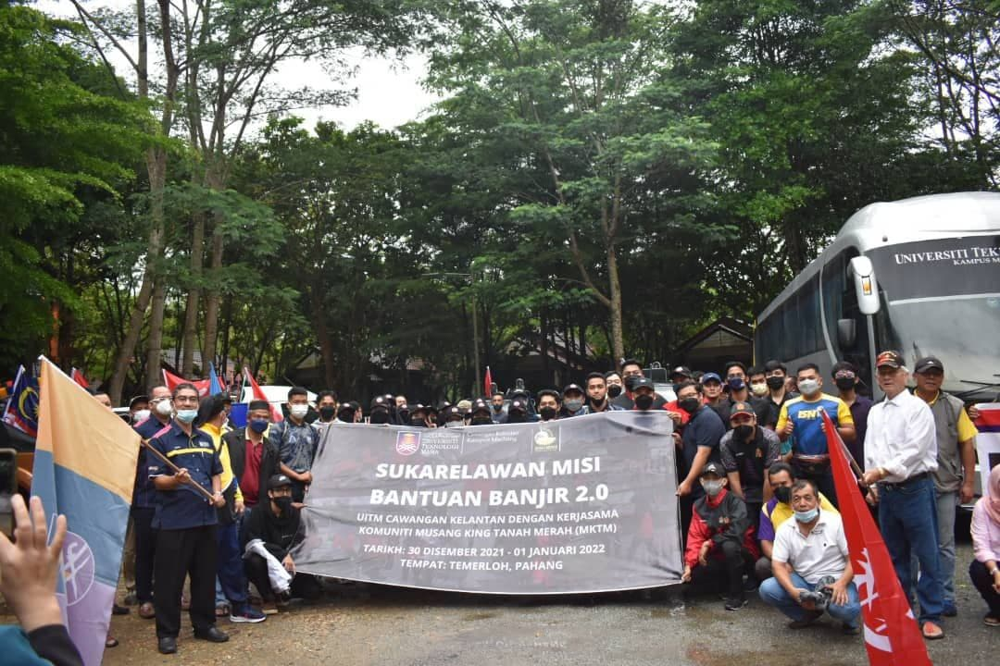
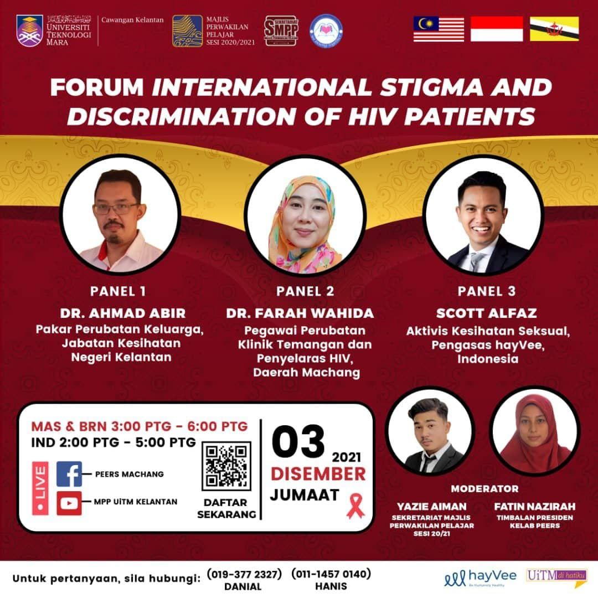

There are a lot of experiences I have gain since I'm in UiTM. Mostly, I got the experiences from the two clubs that I have joined. One of memorable experiences for me is when I joined a flood volunteer program to Temerloh, Pahang organized by UiTM Kelantan with a NGO from Tanah Merah. Being a volunteer has been in my wishlist for a long time, so with this program, I got to do it. Another program that I have joined that consider big is an international program called Forum Stigma and Discrimination of HIV Patients that consist of three countries which are Malaysia, Indonesia and Brunei. This program is a joint force program by Kelab Pembimbing Efektif Rakan Sebaya (PEERS) with the Secreteriate of Student Council UiTM Kelantan. I am in-charged of handling the participants. I will provide more pictures of my experiences so far at the gallery.

